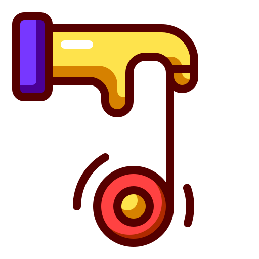

<nav class="navbar navbar-expand-lg navbar-light" style="background-color: white;" id="top">
  <div class="container-fluid">
    <a class="navbar-brand" href="/">
      TO DO LIST</a>
    <button class="navbar-toggler" type="button" data-bs-toggle="collapse" data-bs-target="#navbarSupportedContent" aria-controls="navbarSupportedContent" aria-expanded="false" aria-label="Toggle navigation">
      <span class="navbar-toggler-icon"></span>
    </button>
    <!-- <div class="collapse navbar-collapse" id="navbarSupportedContent"> -->
      <!-- <ul class="navbar-nav me-auto mb-2 mb-lg-0">
        <li class="nav-item">
          <a class="nav-link active" aria-current="page" href="/posts">Posts</a>
        </li>
      </ul> -->
    <!-- </div> -->
    <!-- <div class="social-part">
      <a href="http://www.github.com/giedeve"><i class="" class="fa fa-github" aria-hidden="true" id="media" target="button"></i></a>
      <a href="http://www.facebook.com"><i class="" class="fa fa-facebook" aria-hidden="true" id="media" target="button"></i></a>
      <a href="http://www.linkedin.com"><i class="" class="fa fa-linkedin" aria-hidden="true" id="media" target="button"></i></a>
    </div> -->
  </div>
</nav>
